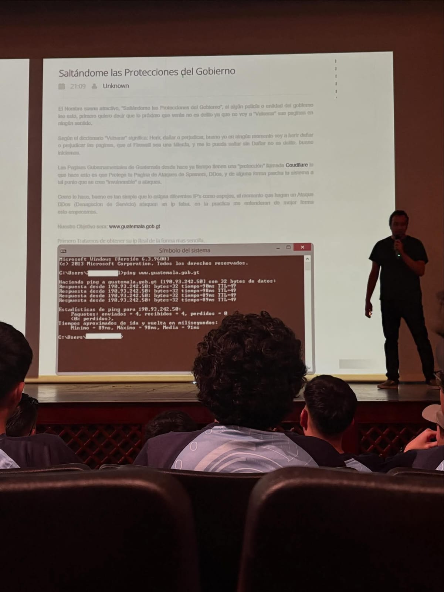
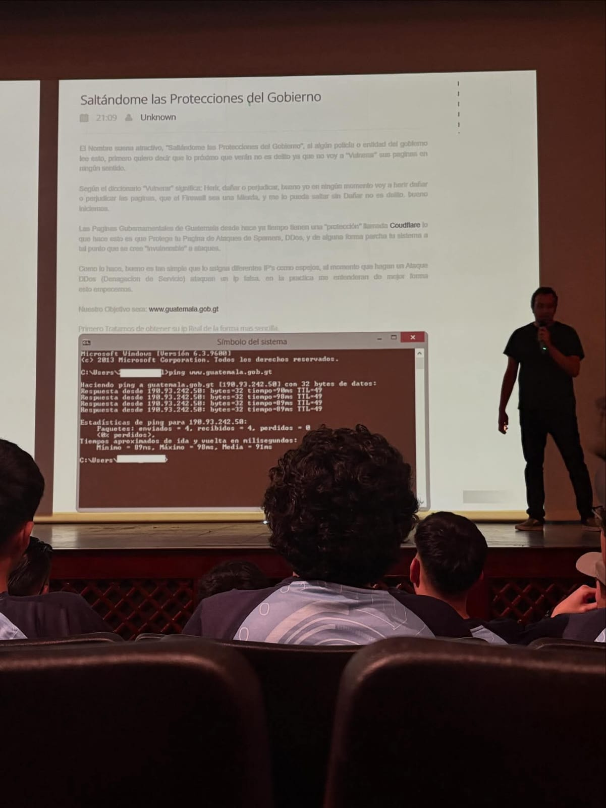

Objetivo
Presentar conceptos clave de Contabilidad Administrativa enfocados en la planeación, control y la toma de decisiones gerenciales de corto y largo plazo.
Contenidos
El objetivo es clasificar los costos para medir, controlar y tomar decisiones que impulsen la rentabilidad y la eficiencia operativa. Tipos principales según su comportamiento:
Clasificación según su reacción al volumen de producción. Fundamental para el análisis de corto plazo.
Uso de indicadores clave (KPIs) como *Margen Bruto, Rotación de Inventarios y Productividad* para evaluar el desempeño y el uso eficiente de los recursos de la empresa.
🎥 Ver video explicativo sobre Clasificación de Costos y Rentabilidad
Análisis para la planeación de utilidades, estableciendo el nivel de ventas necesario para cubrir todos los costos.
Porción de las ventas que queda después de cubrir los costos variables. Base para el cálculo del PE y las decisiones a corto plazo.
Fórmulas para determinar las unidades o monto de ventas para alcanzar el PE o una utilidad deseada (*Utilidad Meta*).
🎥 Ver video explicativo sobre el Punto de Equilibrio y el Análisis CVU
Métodos para asignar costos a los productos y servicios.
Diferencias en el tratamiento de los costos fijos de fabricación (producto vs. periodo) y sus implicaciones en la utilidad reportada.
Asignación de costos indirectos a través de las actividades e *Inductores de Costo*, mejorando la precisión del costeo del producto.
🎥 Ver video explicativo sobre los Sistemas de Costeo (Directo vs. ABC)
Análisis marginal para evaluar alternativas, centrándose solo en los costos e ingresos que difieren entre las opciones.
Evaluar si es más rentable producir un componente internamente (costos variables relevantes) o adquirirlo de un proveedor externo (precio de compra).
Evaluación marginal basada en si el precio del pedido cubre los costos variables y contribuye positivamente a la utilidad total, asumiendo capacidad ociosa.
🎥 Ver video explicativo sobre las Decisiones de Hacer o Comprar
El presupuesto como herramienta de planeación y el control financiero como herramienta de monitoreo y análisis.
El Presupuesto Maestro (operativo y financiero) y su componente vital: el *Presupuesto de Flujo de Efectivo*, que proyecta entradas y salidas de efectivo para asegurar la liquidez.
Uso de *ratios de Liquidez (Capital de Trabajo), Solvencia (Endeudamiento)* y *Rentabilidad (ROE, ROA)* para evaluar la estructura financiera y la salud a largo plazo de la empresa.
🎥 Ver video explicativo sobre Presupuesto de Flujo de Efectivo y Ratios
Herramientas de *presupuesto de capital* utilizadas para evaluar la rentabilidad de inversiones a largo plazo (ej. compra de maquinaria o expansión de planta).
Calcula el valor presente de los flujos de efectivo esperados de un proyecto, descontados a la *Tasa Mínima Aceptable de Retorno (TMAR)*. Si VAN > 0, el proyecto es aceptable.
Es la tasa de descuento que hace que el *VAN sea igual a cero*. Si TIR > Costo de Capital (TMAR), el proyecto es aceptable.
🎥 Ver video explicativo sobre la Evaluación de Proyectos con VAN y TIR
La fase de control, enfocada en medir y analizar las desviaciones entre los resultados reales y los estándares presupuestados, fundamental para la rendición de cuentas.
Presupuesto que ajusta automáticamente los costos a cualquier nivel de actividad dentro del rango relevante, permitiendo una comparación justa con los resultados reales.
Medición de la diferencia en precio y cantidad para materiales directos, mano de obra directa y costos indirectos de fabricación. Clave para la gestión de costos.
🎥 Ver video explicativo sobre el Análisis de Variaciones y Presupuestos Flexibles
Calculadora: Punto de Equilibrio
ANEXO / EVIDENCIAS
Este espacio está reservado para incluir capturas de pantalla, enlaces a la documentación del código, o cualquier evidencia requerida por el proyecto final.
Actividades de aniversario


Actividades de Convencion

 
